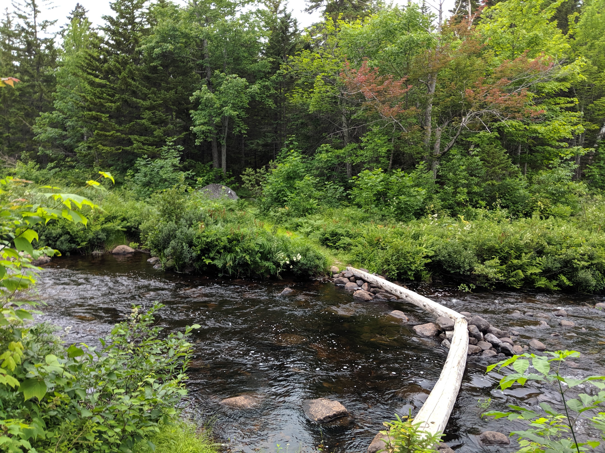
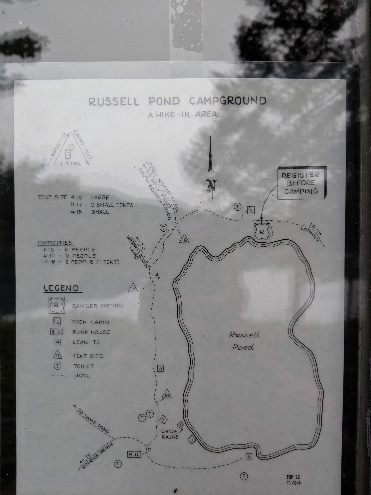
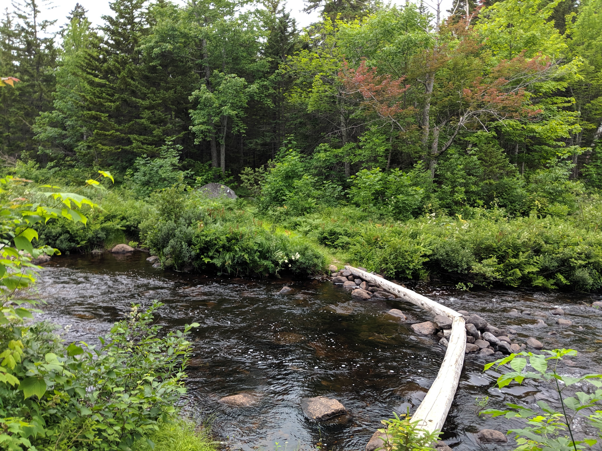
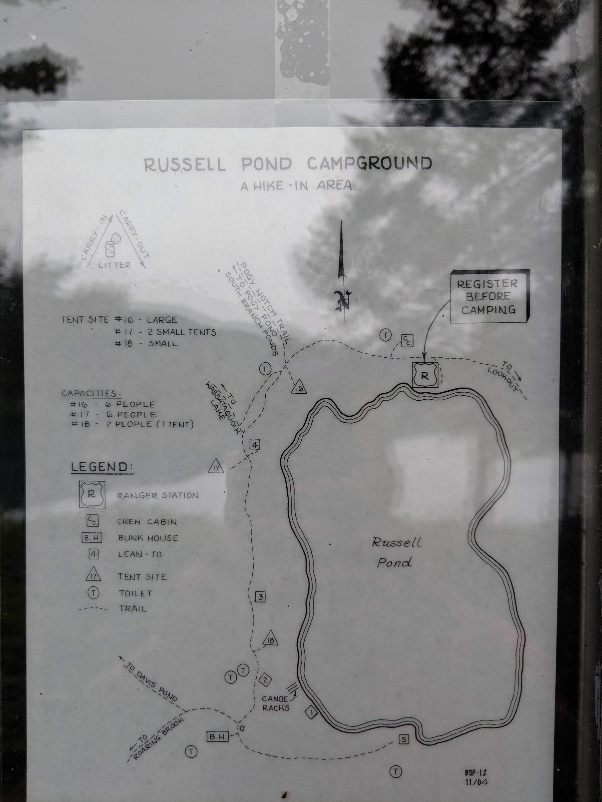
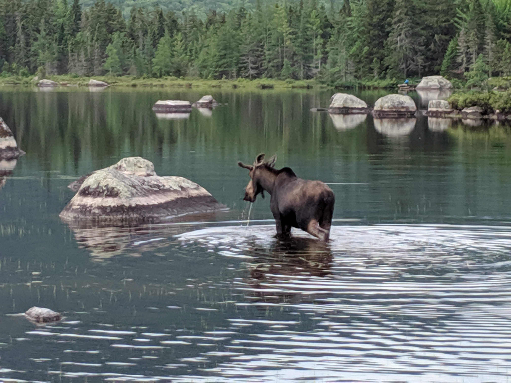
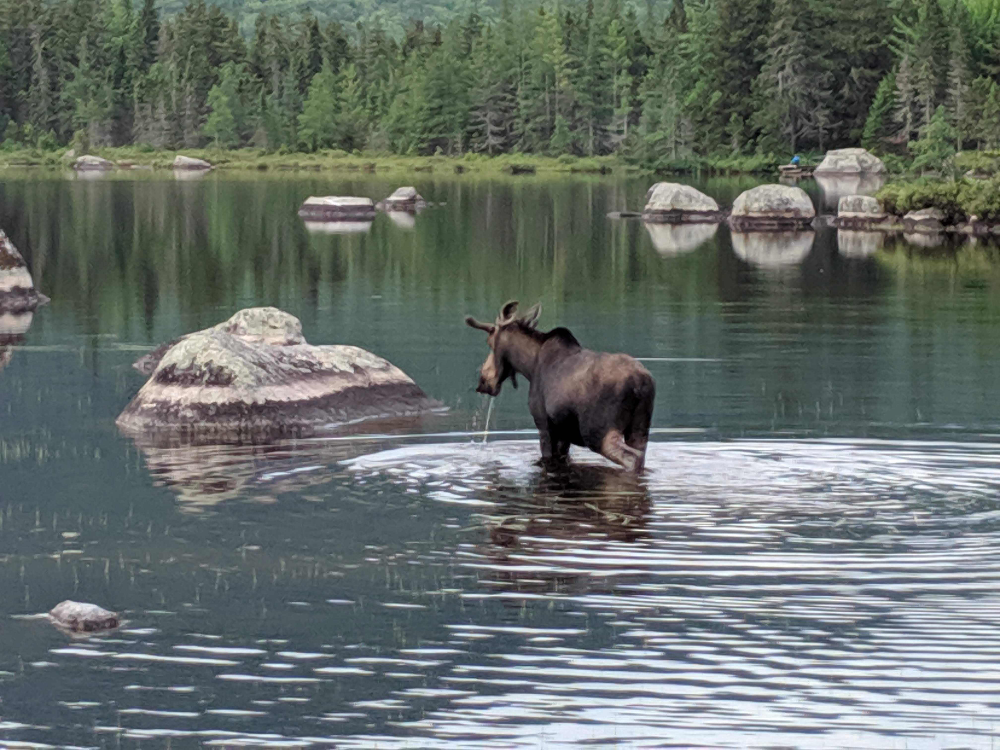

Distance
Distance Elevation
Elevation Observed Wildlife
Observed Wildlifeto
Russell Pond is a true gem. This is one of my all-time favorite New England backcountry experiences and hikes. Russell Pond, and the surrounding bodies of water and terrain, is the most serene location in New England. Katahdin is a spectacle in itself and I earned it with one of the most strenuous day of hiking.
Day 1 - 7.0 miles - 4 hours, 30 minutes
I got a late start since Baxter State Park is so removed from civilization and requires a long drive. It also took some time to figure out my backcountry permit with the kiosk at the entry. I recommend making reservations with the park ahead of time, I was not aware this was possible. I parked at the Roaring Brook Campground and almost did not get a parking spot.

I started my hike just after 1:30 and took comfort knowing my campsite was only six flat miles away. Early on, I came upon Whitten Pond and got an early glimpse of Katahdin. Around halfway through my hike I rested on a sizable glacial erratic before encountering a giant one. The lush Maine woods continued as I plunged deeper into the wilderness.

I arrived at Russell Pond Campground at 5:30. It is the most well established and maintained backcountry campground. I registered with the friendly ranger, as is necessary, and he assigned me a site for the next three nights. Since rain was expected that night he was flexible and directed me to a shelter that was available for the night. The campground posts daily weather reports and has a nice toilet, a place to hang your food, and multiple canoes for paddling around the pond, for a small fee. I could have stayed there for weeks and loved it. I will absolutely be returning someday.
 



Day 2 - 10.4 miles - 10 hours, 20 minutes
I got up early, moved my camping gear to my new site on the opposite end of the campground, and was hiking light by 8AM. My destination was a lookout above Wassataquoik Lake just over five miles away. There were so many sites along the way. The first was a thunder of ruffed grouse, one of many encounters with the noisy game birds. Next was Deep Pond, about a half mile from Russell Pond. I jumped on an awaiting canoe and started paddling. I immediately I spotted what I thought was a duck. As I paddled a bit closer, I realized it was not a duck, but the head of a swimming moose! The moose cow and I shared the pond for about a half hour as she slowly made her way to shore and back into the woods. She acknowledged me, but didn’t seem to care that I was there. I paddled to the opposite end of the pond to enjoy a south-facing view of some nearby mountains.

The next sight was the esker between Six Ponds. There were more canoes here, but I passed up this paddling opportunity. It took me a while to figure out that the trail continued straight past the canoe launch. Bottom line, just keep going straight once you see the canoes. Then I arrived at the long Wassataquoik Lake. A canoe greeted me at the beginning of the lake which is reserved for those staying at the Wassataquoik Island site. If I had an extra night, I would have spent it at this uber remote site. I continued and reached Green Falls halfway up the lake shore. A short spur brought me to the aptly named falls which are a cool sight. A stream of water flows down the moss along a 50 foot steep flat granite rock.


I resumed my hike all the way to its terminus as I climbed up to the lookout. The view of the lake nestled between some small mountains was beyond lovely. Ten miles of trail separated me from any roads, I could feel the remoteness. I descended to the lake and launched a canoe. I was planning on paddling further, but the current of the lake and wind was strong, especially for a single paddler. I landed my canoe onto a skinny island and hung my hammock. I spotted a gorgeous loon swimming and when I paddled back to shore I saw a river otter. I returned to my site at 6:30. That night I concluded my day’s saunter through the Maine backcountry by paddling a canoe out on Russell Pond and enjoying the colors of the setting sun.
Day 3 - 7.7 miles - 6 hours, 49 minutes
 

I started hiking at 7:30AM on the second morning. The ranger, on his way out, alerted me to a moose at the edge of Russell Pond. I investigated, and it appeared to be the same moose from the day before. She again seemed incredulous toward me. I only saw one other individual on this day before returning to the campground. By 8:15 I reached the highest point of my hike at Caverly Lookout. The low elevation clearing was a great place to welcome the day. On a clear morning, it would be a spectacular place to watch the sun rise over the mountains.
The forest was dense and there were some parts where the path was only a foot wide amid the dense brush. I reached Grand Falls, a powerful and impressive place . There was no significant drop and the water flowed through a wide gorge with a few opportunities to climb down to get a more intimate view (click here for vr experience). At one point I descended to a rock in the middle of the falls and quickly regretted my decision. I stranded myself eight feet above heavily rushing water and rocks with a precarious climb back up to safety. After warming up with a good stretch I amped up, willed myself back up the rock, shook off my jitters, and forgot about potentially being stranded on a rock miles from civilization.
Ledge falls was the next stop and there were many places to rinse off the day’s grime and soak in the sun. Here, I spotted the only other hiker. She happened to be naked and laying on the rocks. I thought better about disturbing her and found my own private pool where I could take my own skinny dip. I was back at my site around 2:20 and had plenty of time to relax on my hammock and enjoy another sunset paddle on Russell Pond.
Day 4 - 11.9 miles - 10 hours, 40 minutes
I knew I had a huge hike ahead of me and started the day early. I had packed up my campsite by 5AM and I was on the trail by 5:20. Despite my urgency to start, I had to stop at Russell Pond once more to take in the beauty of its steaming surface as dawn gave way to sunrise. I also lingered in the area while passing a small bog at the start of Northwest Basin Trail. I picked up my pace over the next mile before ascending North Peaks Trail.
The climb up and down Katahdin was the most grueling hike I’ve ever done. I climbed for nearly two hours before my first break. Although the hike continued to hold the beauty of the North Maine Woods I didn’t stop until I reached a cool little waterfall, which created a pretty partial lookout. The trail’s steepness intimidated me as I continued to climb and remained steadfast that every footstep brought me closer to the summit. It wasn’t until 8:50 that I finally broke treeline and enjoyed alpine vistas. I got my first unabated sighting of the summit and incorrectly asserted that I was on the doorstep of Baxter Peak.
The views were amazing. The sheer feeling of being on a higher plane inspired the most awe. The walk along Howe Peaks was flat, but the rockiness of the terrain prevented me from making quick progress. After passing, or reaching (I cannot remember), Hamlin Peak I descended down a saddle. Somewhere between Hamlin Peak and the saddle before Katahdin I encountered a spring, either Caribou Spring or Saddle Spring. I made the biggest mistake of my hike and opted to only fill one of my water bottles in order to save weight as I anticipated meeting another water source in the near future. Unfortunately I did not encounter water of any kind until reaching Roaring Brook five taxing miles later.
The climb from the saddle to Katahdin over the next hour seemed to go on forever. After pushing myself, I finally reached Baxter Peak. I had spent the past three days in the wilderness and it was a little disappointing to see the apex of my hike crowded with so many others. I didn’t linger long, but was able to snap a few photos to remind myself what a dramatic peak it was. I felt like I was miles above the basin and in a different stratosphere compared to the lakes that spread across to the south. (click for vr view from South Peak)
I felt a false sense of relief at reaching the highest point of my hike as the most difficult mile of hiking greeted me at Knife Edge, the most aptly named trail. The cliffs dropped away on either side and the terribly inconsistent footing and sudden drops gave me trouble. At multiple instances, I removed my pack and tossed it down drops of twenty feet or more. After a very long mile I reached Pamola Chimney Peak and turned right onto Helon Taylor Trail.
I’m not sure why I kept expecting the trail to become forgiving, it never did. The trail continued to be extremely steep as I descended 3,419 feet over the last 3.2 miles. I didn’t stop often since I could only think about reaching another water source. After trudging down the Katahdin massif to Roaring Brook, I semi-consciously stripped down, plunged into the cool water, and gulped filtered stream water repeatedly. I reached my car exhausted around 4PM after the most exhilarating and excruciating hike.